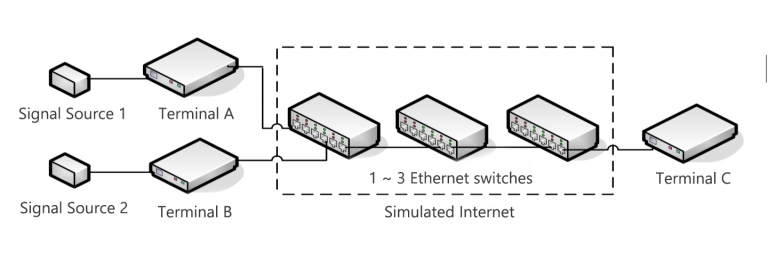
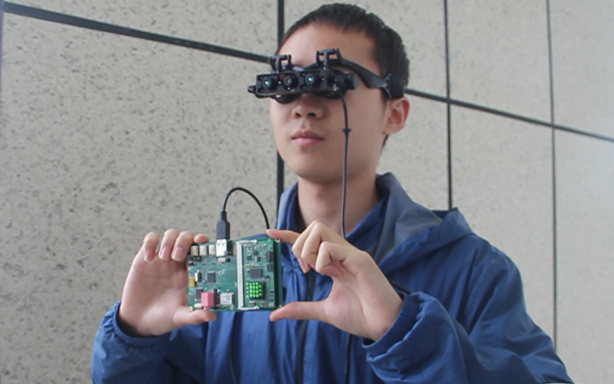

这个页面展示了自 2017 年以来本人主导或者参与过的一些有价值的项目。我喜欢在各个层次去构建系统，因此各个项目所涉及的系统层次会有不同。如果您对某段项目比较有兴趣，可以点击阅读更多。
基于IEEE1588的周期信号同步传输系统

| 时间 | 角色 | 背景 |
|---|---|---|
| 2019.3 - 2019.8 | 项目组长 | 2019年全国大学生电子设计竞赛, （中国，上海） |
在2019年夏天举办的全国大学生电子设计竞赛中，我带领团队设计了基于IEEE1588（PTP，精确时间戳协议）的信号传输系统，实现了在分布式网络节点上的同步信号采集和同步再生 (i.e. 在图中A和B终端上采集两路不同的周期信号，利用物理网络将采集数据发送给终端C，并在C上实现两路周期信号的同步再生)。凭借系统毫秒级别的精度和稳定性，我们最终赢得了全国二等奖。
穿戴式智能导盲设备

| 时间 | 角色 | 背景 |
|---|---|---|
| 2018.10 - 2019.10 | 算法工程师 & 系统软件工程师 | 2019年“互联网+”大学生创新创业大赛，（中国，成都） |
从2018年10月到2019年10月，我参与到了一款用于辅助盲人室内外出行的穿戴式智能导盲设备的开发中。我负责的主要工作除了针对系统MCU (型号：STM32F7 & STM32F1) 的底层驱动软件编写之外，还有基于卡尔曼滤波器 (Kalman Filter) 的融合GPS和惯性导航数据的高精度导航算法。这个设备在2019年拿到了国家专利，并且已经在成都市一些特殊教育学校投入测试使用。